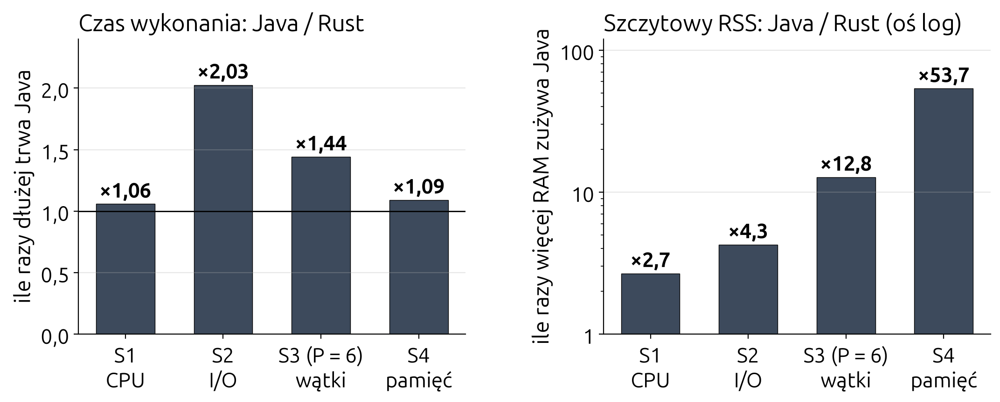
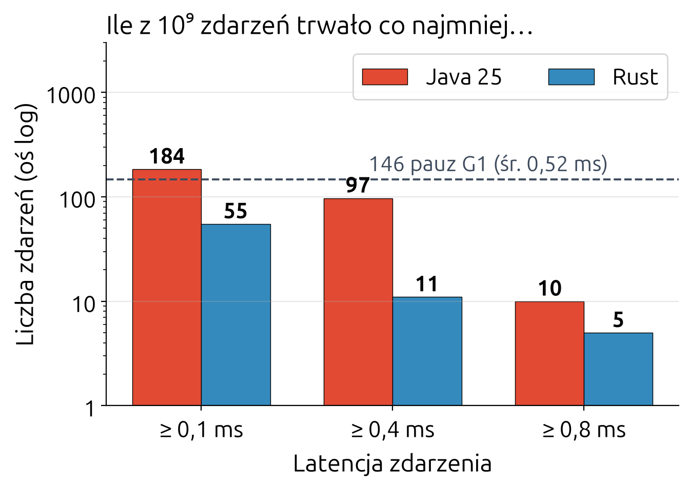

| Wielkość | Narzędzie | Powtórzenia | Analiza |
|---|---|---|---|
| Czas wykonania | hyperfine | 3 rozgrzewki + 10 | mediana, TJava / TRust |
| Pamięć (RSS) | psutil, próbka co 10 ms | 5 przebiegów | średni szczyt, RSSJava / RSSRust |
| Pauzy GC | log JVM -Xlog:gc* | 1 przebieg | liczba i czas pauz |
| Latencja (S4) | zegar w programie | każde z 10⁹ zdarzeń | p50, p99, p99,9, ogon |
| Skalowanie (S3) | hyperfine, P = 1…12 | 3 rozgrzewki + 10 | S(P) = T(1) / T(P) |
long t0 = System.nanoTime();
Event e = reader.read();
if (e == null) break;
SensorState s = state.computeIfAbsent(
e.sensorId(), k -> new SensorState());
s.add(e.value());
if (s.isAnomaly(e.value())) anomalies++;
hist.record(System.nanoTime() - t0);
let t0 = Instant::now();
let Some(e) = reader.read()? else {
break;
};
let s = state.entry(e.sensor_id)
.or_insert_with(SensorState::new);
s.add(e.value);
if s.is_anomaly(e.value) { anomalies += 1; }
hist.record(t0.elapsed().as_nanos() as u64);


| S1 CPU | S2 I/O | S3 (108k, P = 6) | S4 IoT | |
|---|---|---|---|---|
| Czas Java [s] | 5,69 | 21,84 | 7,72 (P=1: 39,07) | 82,37 |
| Czas Rust [s] | 5,38 | 10,78 | 5,36 (P=1: 28,24) | 75,57 |
| Czas Java / Rust | ×1,06 | ×2,03 | ×1,44 (P=1: ×1,38) | ×1,09 |
| Peak RSS Java [MB] | 138 | 2068 | 294 | 351 |
| Peak RSS Rust [MB] | 51,7 | 485 | 23,1 | 6,5 |
| RSS Java / Rust | ×2,7 | ×4,3 | ×12,8 | ×53,7 |
| Pauzy GC (Java) | 0 | 134 · med. 0,58 ms | 3 · śr. 1,83 ms | 146 · śr. 0,52 ms |
| Inne | – | – | krok p50: 39,3 / 27,5 ms p99: 51,1 / 37,6 ms | p50 = p99 = 0,2 µs p99,9 = 0,4 µs (oba) |